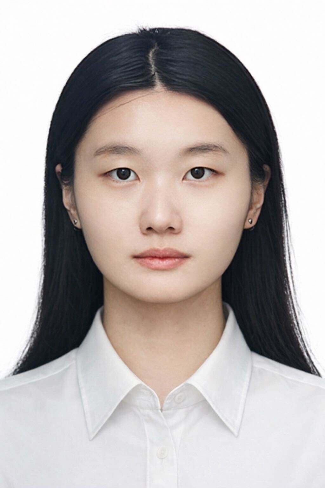

I believe that current clinical data do not fully capture what it means to be a patient.
In practice, clinical decisions are often guided by structured data, but these reflect only part of a patient’s condition. Important aspects—like social context, sleep, and subjective symptom experience—are often recorded as unstructured text and remain underutilized.
My work focuses on making better use of this information. I am interested in identifying meaningful signals within clinical narratives, understanding their clinical relevance, and finding ways to represent them in a form that can be used consistently across different settings.
Over time, I hope to extend this work by integrating these signals with multimodal data, including neuroimaging, to build a more complete picture of patient health.

Underline = first author
Full CV available upon request.